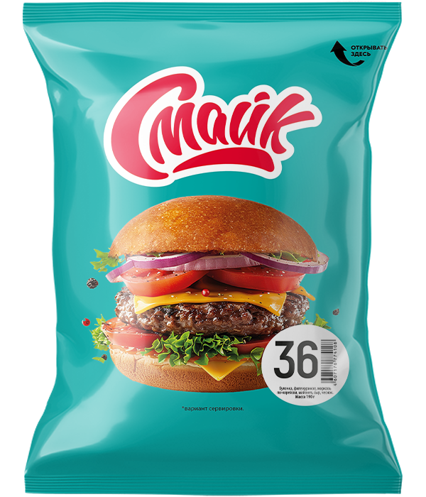

Бутерброд №36

Состав: булочка, филе куриное, морковь по-корейски, майонез, сыр, чеснок.
Масса: 190 г.
Пищевая и энергетическая ценность в 100 г продукта (средние значения):
Белки – 12 г.
Жиры – 17 г.
Углеводы – 22 г.
Калорийность – 290 ккал / 1210 кДж.